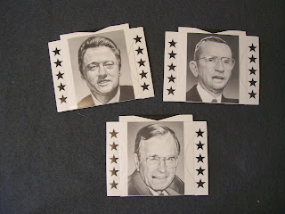

Sound Bites
3/15/2010
{kind=link}

When I received a set of these clever Jay Johnson "Sound Bites" to be given away to one of you blog visitors, I contact Jay for more information. Here's what he wrote:
"Clinton, Yes, I created the Sound Bites. It is my original design. It was my own cottage industry for a season. I sold them during the 1992 election when Clinton, Bush and Perot were slugging it out for election. It really had nothing to do with my act although I did give some away after a performance or two. In 1992 a friend had a novelty store in San Francisco, and was associated with a network of similar stores around the country. We had enough left over to use in the 1996 election when Perot again toyed with the idea of running. Later they were sold as Presidential memorabilia." Jay
So now, here's a set that definitely qualifies as Ventriloquist memorabilia. Hold the piece in one hand and press down on the top edge to open and close the mouth. Very clever! To be awarded later this week.